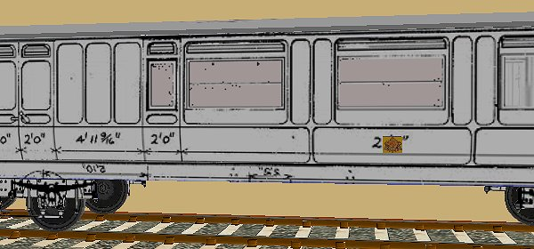
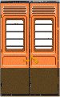

A Coach Made With GMax
by Richard Osborne
Chapter 10: Texturing Tricks And Losing Polygons
I'm a believer in looking at how other people solve problems. If you look at the sample textures from KUJU you'll see numbers & emblems far bigger in proportion than the coach sides. It dawned on me that they must use a transparent panel for their numbers. This is very efficient & cunning. One small area of texture can be used many times on a model, the number appears much sharper & a number is simply changed. All this for just 2 extra polygons per number. I've used transparent panels on all my models.
They're also the answer if you want to change, say, the emblem on a loco. Change the size & position of one panel to take L S W R, which is a scale 12' to a 2' square to take a BR dog & wheel. Once the panel is made you can scale it, remap it, move it & clone it.
This coach uses the LNWR emblem, nicknamed Cauliflower, twice per side, you can see the scale of it on the texture file. Some coaches have an elaborately shaded 1 or 3 on each door, it would be very tedious to try to repeat them. For the LSWR coaches I drew a texture file with numbers & words using it with each series of coaches. For these coaches I need the words:- Guard, Luggage, Third, First, L&NWR, WCJS as well as the cauliflower. The cauliflower & wording could fit a 256 file which would be needed once for a full train of 15 coaches; it won't be inefficient usage of a small texture file. I've seen just a bogie side on a 512 file before - that's inefficiency. A tip - the more elaborate & time-consuming the alpha masking leave it till last. Only mask when the file is finalised.

I haven't done it yet but...when final texturing, assuming your plan isn't terribly distorted you should be able to draw part of your coach & repeat it. These coaches were built to standard sizes, each window & door should be the same. Accurately draw one part, copy it to the clipboard then paste it as many times as needed. You only have to fill in between pasted parts - saves hours!

There will be times when you have to move & remap with a bit more precision, Gmax is hopeless for mapping with precision. One trick is to draw a scale on the texture file. In SView you can see that something should be 4 up, 5 to the right or whatever. Texturing is all nudge & move. If you try to finalise the texture then make it fit you're making a rod for your back.
If you put texture on a cylinder, a boiler or tank wagon, from the side, in Gmax planar you'll get distortion as the centre polygons are wider than the edges.Purely as a demonstrator I've put a tank onto the running gear of the coach. Isolate one side of the tank & just apply texture. I've put some rivets onto a plain background. It appears on the .ace files with distortion.
The result when we view it. See how the rivets & numbers near the centreline are stretched. The numbers were added after the first screenshots.
If we draw a regular grid & add it to our texture file we can compensate. If we look at the 'edit' screen we can see the tank still with distortion. This grid has been drawn before & called from the clipboard manager.
Pull the horizontals to match the horizontals of the grid.
Now when we export & look in SView the rivet & number spacing is regular.
With a regular shape we could use 'cylindrical' in the 'Mapping' panel. If you had a boiler with firebox or smokebox it's easier to use 'planar'. You can do something similar to this in TSM; isolate each polygon then 'Polygon', find 'Texture' near the bottom of the dropdown & remap the polygon. As you have to remap polygon by polygon it takes an age.
Here's one from TSM, but it could equally apply to Gmax. For some reason the texture for the back of seats is from the top & not from the right as you'd expect. The result is that the back uses a very thin slice of texture, I've got a feeling LNWR used a flowery print for their seats, the effect will be more pronounced.
In TSM 'Polygon', isolate the offending polygon, 'Texture' & remap. In Gmax isolate the horizontal polygons & texture, then the verticals. The result is better. Gmax will mirror without any problem, in TSM you'll have to mirror then place texture from right instead of from left.
I said before I'd use transparent panels now where I used to use solid construction. An example:- those of you who read the loco tutorial will remember the cab was built from rectangles, quite labour & polygon intense. In my defense I stated it as a way of building, logical but not necessarily the best way. Now I'd use panels certainly for the top of the cab unit, again it's a compromise between efficient building & efficient use of the texture file. You can see the polygons, I could have used one panel for the top rear face. If only Gmax showed transparency!
I mentioned solid driving wheels before; I used to make wheels with all solid parts. Coach wheels are made in the way I've described in Chapter 7; driving & loco bogie wheels can be a bit of a compromise.

These are bogie wheels; I use one panel for the inside faces, one for the outside of the rims, one for body colour with a black painted axle end. Tip:- they're in squares; texture using the corners for UVW mapping then apply alpha texturing. Obviously the texture has to be masked around the rims & spokes. The tricky bit is getting the inside of the rims to match the solid rims of the wheel.
A pair of driving wheels, the spokes & hub are showing in front of the outer face, when you see the wheel in SView or MSTS the wheels appear exactly as solid wheels. The main difference is a saving of hundreds of polygons.
Speaking of saving polygons; there's no reason why locos & coaches have to be symetrical. A brake coach could have more detail on the rear end, buffers might be solid here but have transparent faces on the front, hidden end. Loco handrails might be 10 sided on the driver's side where they're visible from the Cab View but only 5 sided on the opposite side. It all counts! I have downloaded a loco where the cabview model is more detailed on the blind side than the main model - but that's another story. The golden rule - if you can't see it, it shouldn't be there.
I haven't mentioned Levels of Detail. In reality our coach isn't yet detailed to the point where it would help us by trimming polygons. We need to finish building underbody parts, vacuum pipes, vents & handrails; those things which add to the solidity of our model when viewed from close-to but which won't be seen from further away. Gmax is a bit awkward for LoD, you have to trim polygons from parts; all parts must remain on the list even if they only have a few polygons remaining.
The main thing is to get some coaches or wagons built & running in a consist. I promise you'll have a grin like the Cheshire Cat when you see your efforts on the screen. Maybe publish them & get some complimentary feedback. Before concluding can I thank those people who were patient with me when I asked the most basic questions when the learning curve seemed insurmountable.
Above all:- enjoy yourself, it's a game. It says so on the box.